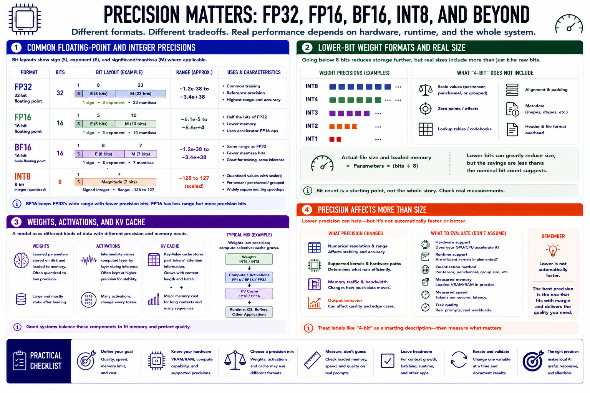

Precision Basics
Connecting to LMS... Progress: in progress

Narration
FP32 uses 32-bit floating-point values and has been a common training and reference precision. FP16 uses half as many bits, reducing memory and taking advantage of supported accelerator operations. BF16 also uses 16 bits but allocates them differently, preserving a broad numerical range that is useful in training and some inference workflows. Hardware support determines whether a precision provides an actual speed benefit.
INT8 represents quantized values with 8-bit integers, often with per-tensor, per-channel, or grouped scale information. Four-bit and lower-bit weight formats reduce storage further, but the nominal bit count does not include every scale, lookup, alignment, or metadata cost. Actual file and loaded sizes are therefore larger than parameters multiplied by bits alone.
Weights are the learned model parameters. Activations are intermediate values produced while the model processes input. A system may store weights at low precision while computing activations or selected layers at higher precision to preserve quality. The key-value cache has its own format and memory cost, which grows with context length and active sequences.
Precision affects more than size. It changes numerical resolution, supported kernels, memory traffic, and sometimes output behavior. Lower is not automatically faster if the hardware or runtime lacks an efficient implementation. Treat labels such as 4-bit as a starting description, then inspect the quantization method, runtime support, measured memory, speed, and task quality.